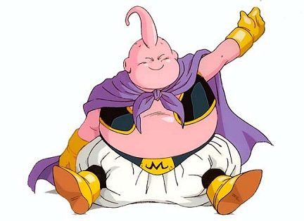

|  | Majin-Boo (Bueno) (魔人ブウ (善), Majin Bū (Zen)), conocido como Bubú en España y como Majin-Boo desde Dragon Ball Super, es el resultado del Majin-Boo que realiza la fisión para separarse en dos mitades: una buena y una mala, existiendo como la parte bondadosa de la entidad. |
|